It took too long to compile all the information. Apologies! But finally me and Jajnabalkya(JJ) tried to consolidate the most relevant and important information for all of you. Comments and Questions are welcome. Feel free to drop in e-mail for anything else you want to know about.
Here is what we have got :
Traveling
- International Flights : flug.idealo Return flights from the major cities are cheaper and convenient. Destination Airports in India, in order of preference:
- Mumbai (BOM) - Chatrapati Shivaji International Airport.
- Delhi (DEL) – Indira Gandhi International Airport.
-
Domestic Flights :
- flug.idealo - Generally cheaper and payment can be made in €.
- makemytrip - Local Indian webiste
NOTE : Please note that the luggage allowance on domestic flights are only 15 Kg (for more you will have to pay) and you must reach the airport at least 2.5 hours before your flights as there are multiple security control.
- Domestic Trains:
India has the largest rail network in the world and is a good and cheap means of transport for long distances if you book tickets ahead and follow the points below:
- Trains generally have a Sleeper class, 3 tier AC class, 2 tier AC class and 1 tier AC class.
- DO NOT BOOK in sleeper class.
- The AC classes (3 tier, 2 tier, 1 tier) have comfortable sleeping berths which are good to travel between cities at long distances (Equivalent to German DB city night line CNL). Bed Rolls consisting of Bedsheets, Blanket& Towel are provided in Overnight Trains in AC Coaches which are given around 8-9PM and collected back by 6AM.
- A small guide on train traveling
- For guide to booking tickets online
- You can look up the connections and consult with us before booking. We would be glad to help you out.
Hotel Bookings
- Booking.com
- Goibibo
- MakeMyTrip
- Trivago
- Oyo Rooms
For the nights of wedding and dinner reception you would be accommodated by us. Websites to book from:
Visa for India
- Advisory : Services of e-Tourist Visa involves completely online application for which no facilitation is required by any intermediary / agents etc. It is advised not to believe or fall in trap of any such unscrupulous elements. For any clarification or doubt may contact to indiatvoa@gov.in
- Link to apply for the visa
Kindly do recheck yourself from Indian Embassy Berlin, Generally you require only an e-Visa.
Places of Interest
- North: Agra, Jaisalmer, Varanasi, Amritsar, Jaipur, Jodhpur, Udaipur, Delhi, Jim Corbett National Park, Ajmer, Bandhavgarh National Park, Indore
- South: Allepy, Munnar, Athirapally, Kottayam
- East: Kolkata
- West: Mumbai, Goa
- Map
- Tourism Overview website
- Recommended Cultural tour (we personally know them)
Me and JJ tried to list down famous and personal favourite cities for you. This is simply our recommendation but do feel free to explore more options. If you have questions, feel free to ask
As per Directions :
Cities :
| Cities | Relevant Details |
|---|---|
|
AGRA 
|
|
JAISALMER 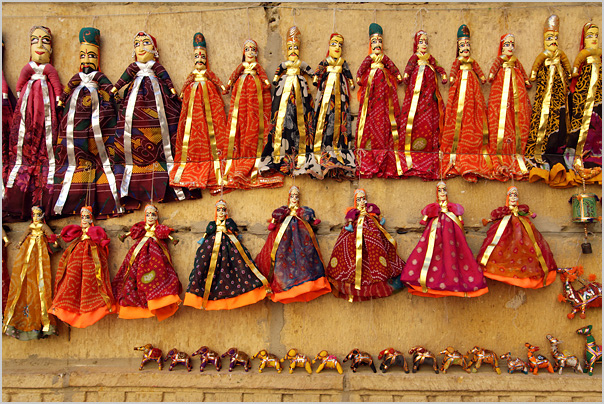 |
|
JAIPUR 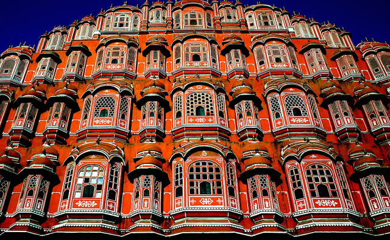 |
|
JODHPUR 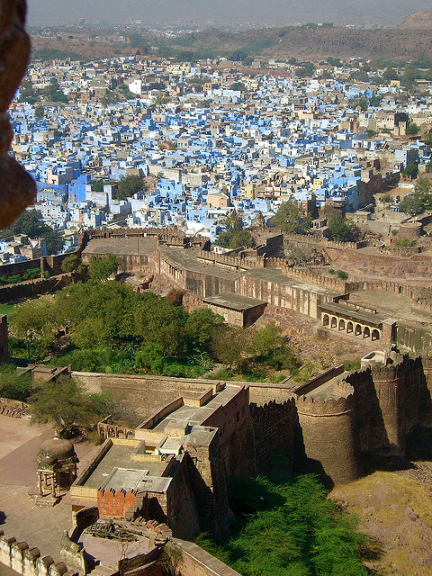 |
|
UDAIPUR 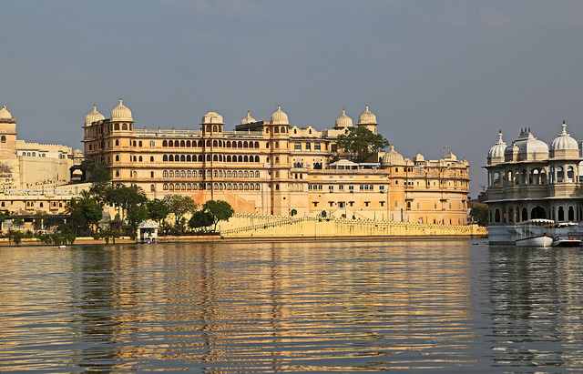 |
|
AMRITSAR 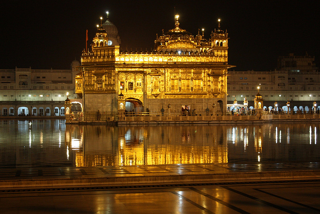 |
|
VARANASI 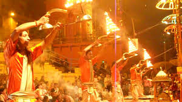 |
|
AJMER |
|
DELHI |
|
Jim Corbett National Park 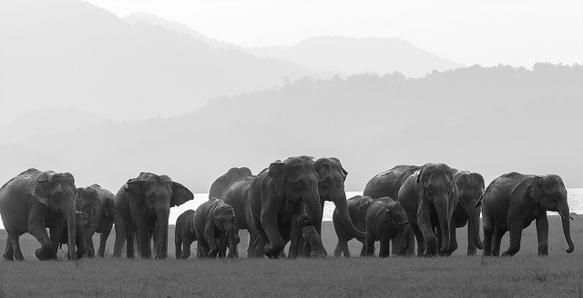 |
|
Bandhavgarh National Park 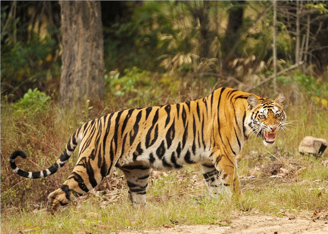 |
|
KOLKATA 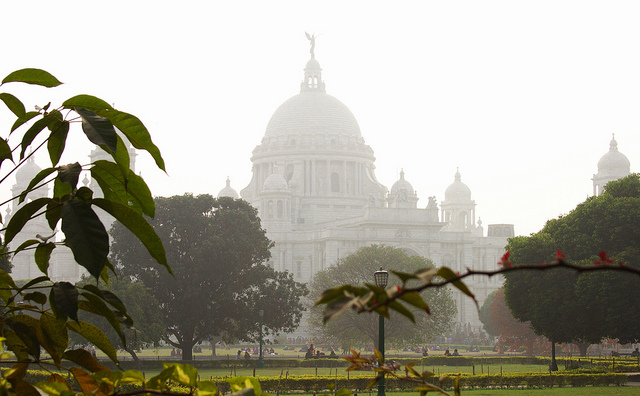 |
|
INDORE 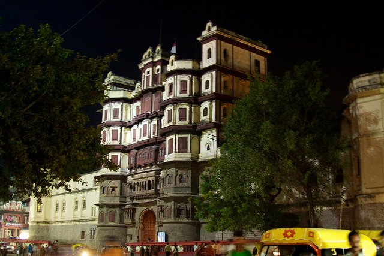 |
|
MUMBAI 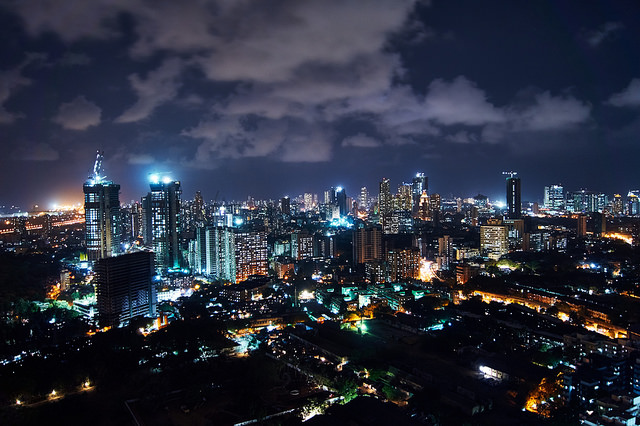 |
|
GOA 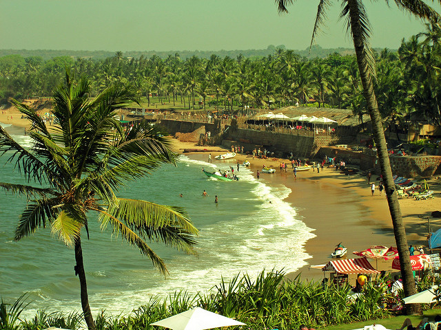 |
|
ALLEPY 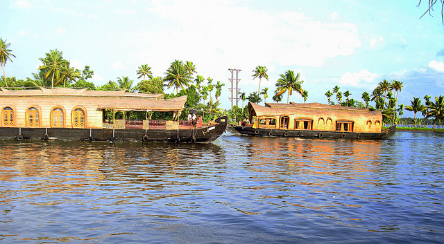 |
|
MUNNAR 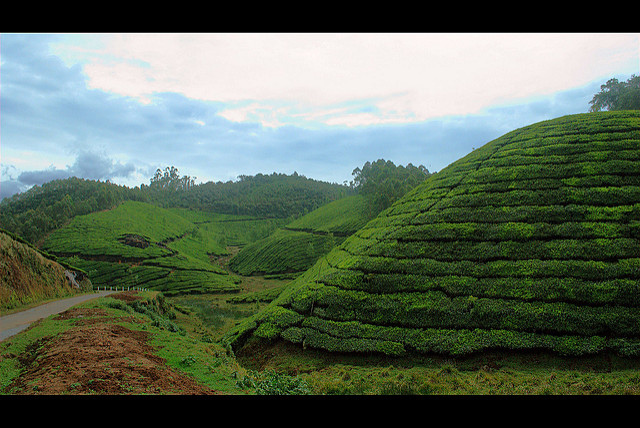 |
|
ATHIRAPALLY 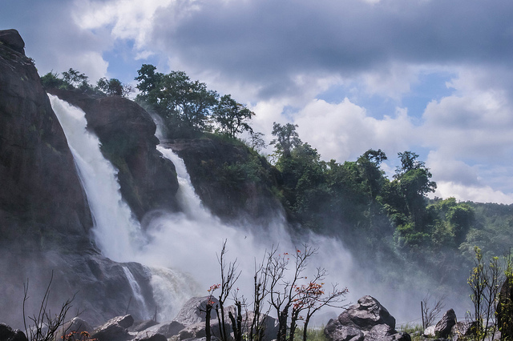 |
|
KOTTAYAM 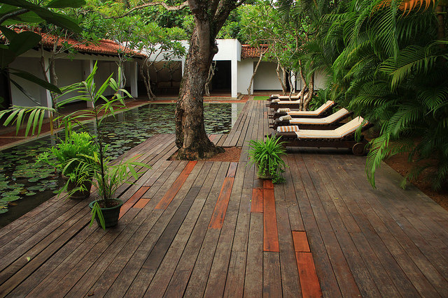 |